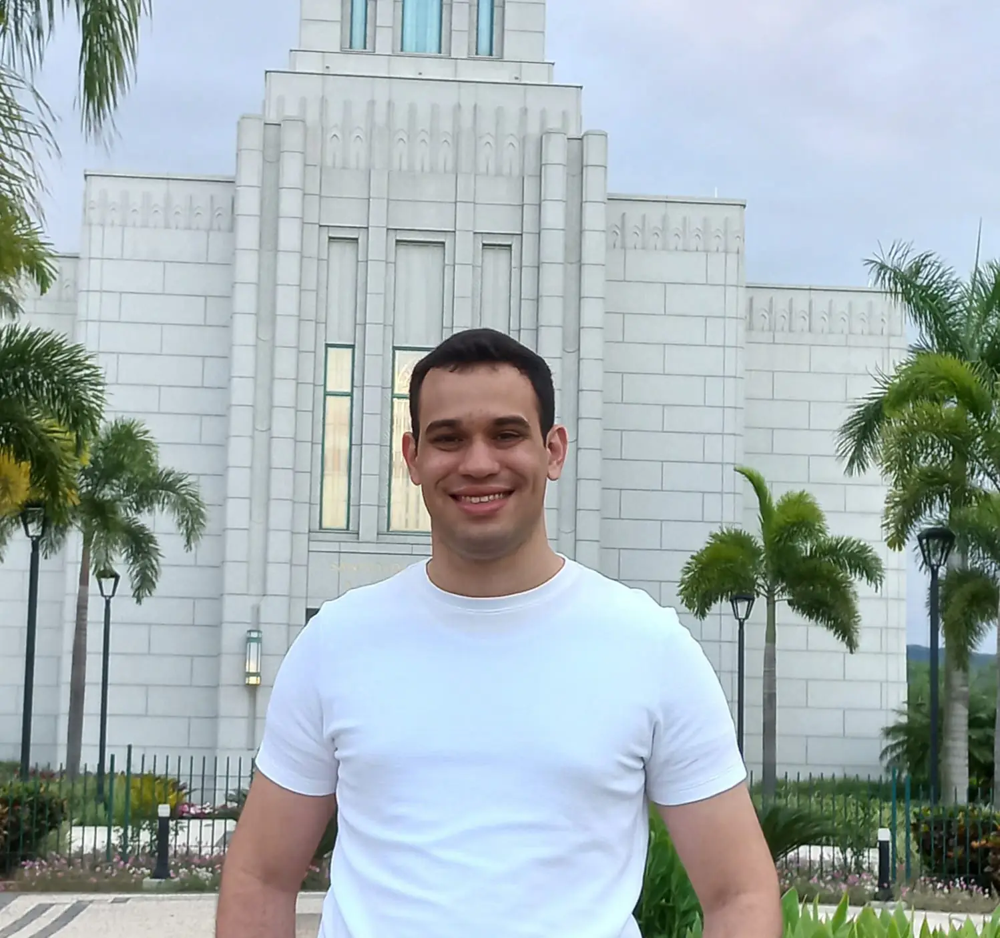

Amon T B Silva | WDD 130

Olá, eu sou o Amon T B Silva. Sou do Rio de Janeiro, Brasil. Gosto de programar, ensinar e explorar novas tecnologias.

Olá, eu sou o Amon T B Silva. Sou do Rio de Janeiro, Brasil. Gosto de programar, ensinar e explorar novas tecnologias.